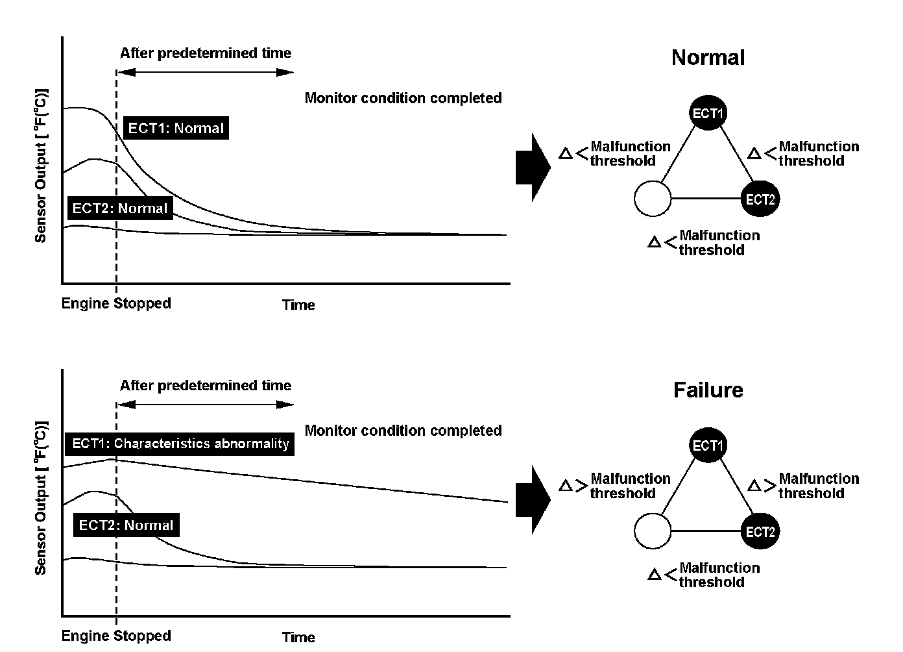
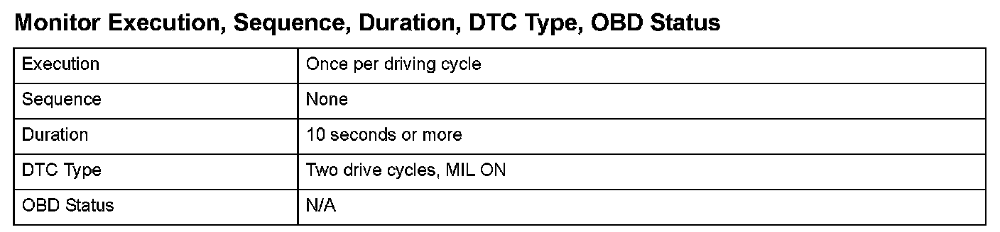
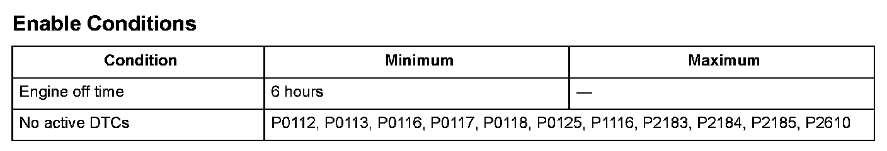

Advanced Diagnostics
DTC P111: Intake Air Temperature (IAT) Sensor Circuit Range/Performance Problem
General Description
Two engine coolant temperature sensors and one intake air temperature sensor are used by the engine control module (ECM)/powertrain control module (PCM).
When the engine is stopped and enough time has passed, the temperature of the engine will equal the ambient temperature. When an inappropriate temperature is detected after comparing the temperature readings of each sensor, a malfunction in the corresponding sensor is detected and a DTC is stored.

Monitor Execution, Sequence, Duration, DTC Type, OBD Status

Enable Conditions
Malfunction Threshold
A malfunction is detected if these three conditions are present after the engine and the ignition switch have been off for at least 6 hours:
- When the temperature difference between the IAT and ECT1 is 81 °F (45 °C)*1, 59 °F (33 °C)*2 or more.
- When the temperature difference between the IAT and ECT2 is 45 °F (25 °C)*1, 36 °F (20 °C)*2 or more.
- When the temperature difference between the ECT2 and ECT1 is 90 °F (50 °C)*1, 66 °F (37 °C)*2 or more.
*1: R18A1 engine
*2: K20Z3 engine
Driving Pattern
1. Turn the ignition off, and wait at least 6 hours.
2. Start the engine, and let it idle for at least 10 seconds.
Diagnosis Details
Conditions for illuminating the MIL
When a malfunction is detected during the first drive cycle, a Temporary DTC is stored in the ECM/PCM memory. If the malfunction recurs during the next (second) drive cycle, the MIL comes on and the DTC and the freeze frame data are stored.
Conditions for clearing the MIL
The MIL will be cleared if the malfunction does not recur during three consecutive trips in which the diagnostic runs.
The MIL, the DTC, the Temporary DTC, and the freeze frame data can be cleared by using the scan tool Clear command or by disconnecting the battery.